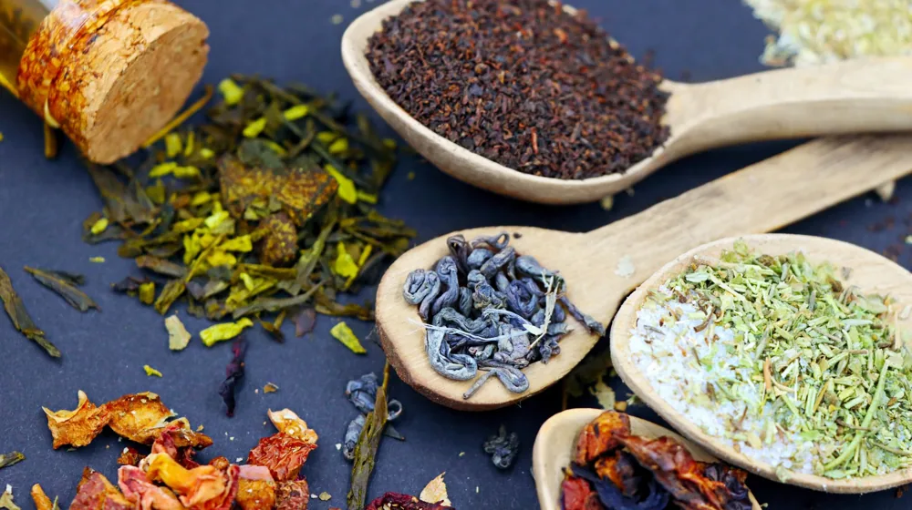

내 몸에 꼭 맞는 한방차, 실패 없이 재료 고르는 3가지 비법
사진: Emrecan Dora / Pexels (무료 이미지, 출처 표기)
내 몸에 좋은 한방차를 직접 만들어 마시고 싶은데, 어떤 재료를 골라야 할지 막막하신가요? 내 체질에 맞지 않는 재료는 오히려 독이 될 수 있어 신중한 선택이 중요합니다. 이 글에서는 사상체질별 추천 재료부터 믿을 수 있는 구매처, 그리고 현명한 선택을 위한 체크리스트까지, 성공적인 한방차 재료 소싱의 모든 비법을 알려드립니다. 건강한 습관을 위한 첫걸음, 지금부터 함께 시작해 보시죠.
내 체질, 무엇인지부터 정확히 알아보세요

한방차 재료를 선택하기 전, 가장 먼저 알아야 할 것은 바로 자신의 ‘체질’입니다. 한의학에서는 사람을 크게 네 가지 사상체질(四象體質)로 분류합니다. 소음인, 소양인, 태음인, 태양인이 그것이죠. 각 체질은 타고난 신체적 특성과 장단점, 그리고 잘 맞는 약재와 음식이 다릅니다.
정확한 체질 진단은 한의사와 같은 전문가의 도움을 받는 것이 가장 확실합니다. 자가 진단 테스트도 있지만, 이는 참고용일 뿐 오진의 가능성이 있습니다. 잘못된 체질 진단은 맞지 않는 한방차 재료를 선택하게 할 수 있으니, 건강을 위해 전문가의 문을 두드려 보세요.
체질별 추천 한방차 재료 한눈에 보기
자신의 체질을 알았다면, 이제 그에 맞는 한방차 재료를 선택할 차례입니다. 2026년 8월 기준으로 대중적으로 잘 알려진 사상체질별 추천 재료는 다음과 같습니다. 단, 이는 일반적인 권장 사항이며 개인의 건강 상태나 특이 체질에 따라 다를 수 있습니다.
이 표는 참고 자료로 활용하시고, 특정 질환이 있거나 복용 중인 약이 있다면 반드시 한의사 또는 의사와 상담 후 섭취하시길 바랍니다.
믿을 수 있는 한방차 재료, 어디서 구매해야 할까?
내 체질에 맞는 재료를 정했다면, 이제 품질 좋은 재료를 구매할 차례입니다. 한방차 재료는 다양한 곳에서 구할 수 있으며, 각 구매처의 장단점을 고려하여 선택하는 것이 좋습니다.
- 한약국/한의원: 가장 신뢰할 수 있는 구매처입니다. 전문가가 직접 약재를 관리하고 조제하기 때문에 품질이 우수하고, 체질에 대한 상담도 동시에 받을 수 있습니다. 가격은 다소 높을 수 있습니다.
- 전통시장/약재시장: 서울 경동시장처럼 약재 전문 시장에서는 다양한 종류의 한약재를 직접 눈으로 보고 비교하며 구매할 수 있습니다. 가격 흥정이 가능하고 신선한 재료를 구할 확률이 높지만, 품질을 정확히 판단하기 위해서는 어느 정도 지식이 필요합니다.
- 온라인 전문 쇼핑몰: 접근성이 매우 뛰어나고 편리합니다. 다양한 종류의 약재를 쉽게 찾아볼 수 있으며, 가격 비교도 용이합니다. 하지만 실물을 볼 수 없으므로 판매자의 신뢰도와 품질 인증 여부를 꼼꼼히 확인해야 합니다. 식품의약품안전처(식약처)의 관리 기준을 준수하는 곳을 선택하는 것이 중요합니다.
어떤 경로로 구매하든, 판매처의 위생 상태와 약재의 보관 환경을 주의 깊게 살펴보세요. 빛과 습기에 약한 약재가 많으므로, 개방된 공간보다는 밀폐된 곳에서 보관되는 제품을 우선적으로 고려하는 것이 좋습니다.
한방차 재료 구매 시 반드시 확인해야 할 체크리스트
소중한 내 몸을 위한 한방차, 아무 재료나 살 수는 없습니다. 다음 체크리스트를 활용하여 현명하게 재료를 선택하세요.
- 원산지 확인: 국산인지 수입산인지 확인하고, 수입산이라면 어느 국가에서 왔는지 확인합니다. 중국산 약재가 많으므로, 신뢰할 수 있는 수입 절차를 거쳤는지 확인하는 것이 좋습니다.
- 유통기한/제조일자: 약재도 유통기한이 있습니다. 제조일자가 최신이고 유통기한이 충분히 남아있는 제품을 선택하세요.
- 품질 인증 마크: GAP(우수농산물관리제도), GMP(우수건강기능식품제조기준) 등 식약처가 관리하는 품질 인증 마크가 있는지 확인합니다. 이는 약재의 안전성과 품질을 보증하는 중요한 지표입니다.
- 육안으로 확인 가능한 상태: 재료의 색깔, 향, 모양 등을 직접 확인합니다. 너무 오래되거나 변색된 것은 피하고, 곰팡이 흔적이나 이물질이 없는지 살펴봅니다. 약재 고유의 향이 살아있는 것이 좋습니다.
- 보관 상태: 구매처에서 약재를 어떻게 보관하고 있는지 확인합니다. 직사광선을 피하고 습기가 없는 서늘한 곳에 밀폐 보관된 제품이 좋습니다.
- 판매처의 신뢰도: 오랜 기간 약재를 취급해온 전문 판매처인지, 고객 후기가 좋은지 등을 종합적으로 고려합니다.
초보자를 위한 한방차 재료 활용 및 보관 팁
구매한 재료를 올바르게 활용하고 보관하는 것도 중요합니다. 몇 가지 팁을 알려드립니다.
- 간단한 한방차 만들기: 대부분의 한방차 재료는 깨끗이 씻은 후 물에 넣고 끓이면 됩니다. 센 불에서 끓기 시작하면 약불로 줄여 30분~1시간 정도 더 끓인 후, 건더기를 걸러내고 마시면 됩니다. 처음에는 한 가지 재료로 시작하여 맛과 몸의 반응을 살펴보는 것이 좋습니다.
- 적절한 양 조절: 일반적으로 물 1~1.5리터에 약재 10~30g 정도를 사용하지만, 약재의 종류나 개인의 기호에 따라 조절할 수 있습니다. 처음에는 소량부터 시작하여 점차 양을 늘려가세요.
- 보관 방법: 습기에 취약한 한방차 재료는 공기가 통하지 않는 밀폐 용기나 지퍼백에 넣어 건조하고 서늘한 곳에 보관해야 합니다. 장기 보관 시에는 냉장 또는 냉동 보관하는 것이 좋습니다. 햇볕이 드는 곳이나 습한 곳은 피해야 합니다.
개인의 체질과 건강 상태를 고려한 현명한 한방차 재료 소싱은 건강한 생활을 위한 좋은 습관이 될 것입니다. 이 글의 정보가 여러분의 건강 관리에 도움이 되기를 바랍니다. 정확한 정보는 구매 전 해당 기관의 공식 홈페이지나 전문가에게 다시 확인하시길 권장합니다.
🔗 이 글도 함께 보면 좋아요: 커피 로스팅 단계별 맛 차이: 내 취향 원두 찾는 완벽 가이드
관련 추천 상품
이 포스팅은 쿠팡 파트너스 활동의 일환으로, 이에 따른 일정액의 수수료를 제공받습니다.